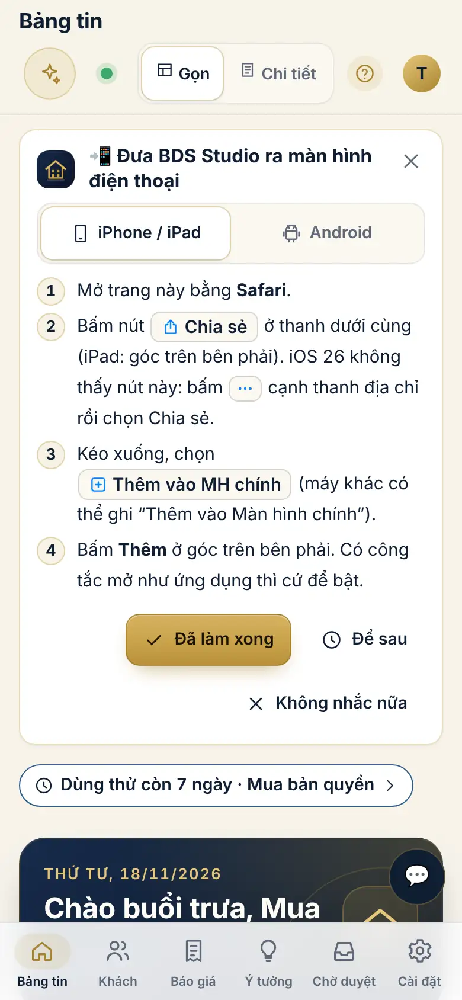
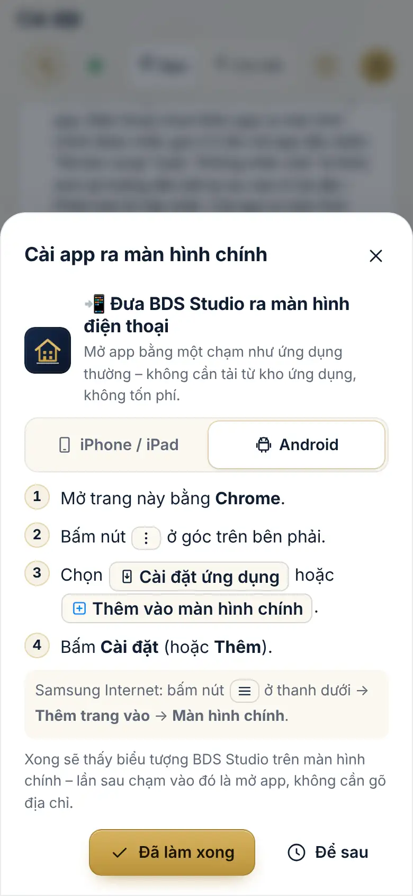
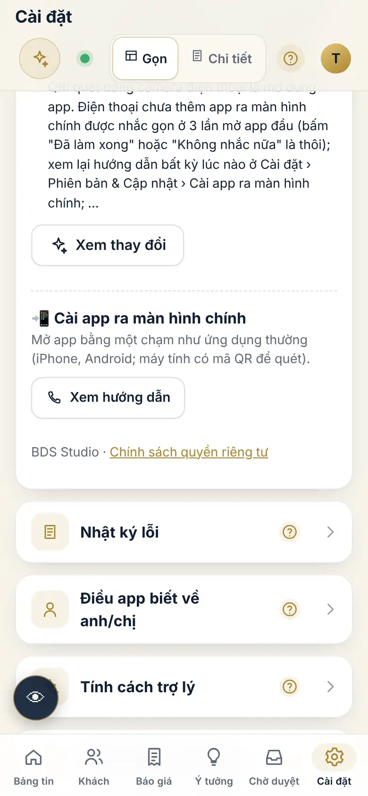

Cài app ra màn hình chính
BDS Studio chạy trong trình duyệt. Thêm ra màn hình chính để mở bằng một chạm như ứng dụng thường. Không cần kho ứng dụng, không tốn phí.
Chưa cài máy chủ? Làm theo Cài BDS Studio trên máy tính – bước cài làm trên máy tính (điện thoại, máy tính bảng không cài được; mở trang cài đặt trên điện thoại sẽ có nút Chép link để gửi sang máy tính). Cài xong mới đưa app ra điện thoại. Trang này chỉ nói việc đưa app (đã cài) ra màn hình chính.
iPhone / iPad (Safari)
- Mở địa chỉ app của anh/chị bằng Safari.
Đang mở trong Zalo hoặc Facebook thì chọn "Mở bằng Safari" trước. - Ba lần mở app đầu, app tự hiện thẻ 📲 Đưa BDS Studio ra màn hình điện thoại.
- Bấm nút Chia sẻ ở thanh dưới cùng (iPad: góc trên bên phải).
iOS 26 không thấy nút này: bấm … cạnh thanh địa chỉ rồi chọn Chia sẻ. - Kéo xuống, chọn Thêm vào MH chính (có máy ghi "Thêm vào Màn hình chính").
- Bấm Thêm ở góc trên bên phải.
- Quay lại app, bấm ✓ Đã làm xong để thẻ không hiện nữa.

Android (Chrome)
- Mở địa chỉ app bằng Chrome.
- Bấm nút ⋮ ở góc trên bên phải.
- Chọn Cài đặt ứng dụng hoặc Thêm vào màn hình chính.
- Bấm Cài đặt (hoặc Thêm).
Samsung Internet: bấm ☰ ở thanh dưới → Thêm trang vào → Màn hình chính.

Xem lại hướng dẫn
Đã bấm Để sau hoặc Không nhắc nữa? Vào Cài đặt › Phiên bản & Cập nhật, bấm Xem hướng dẫn ở dòng 📲 Cài app ra màn hình chính.
